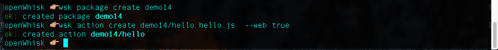
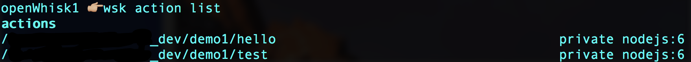
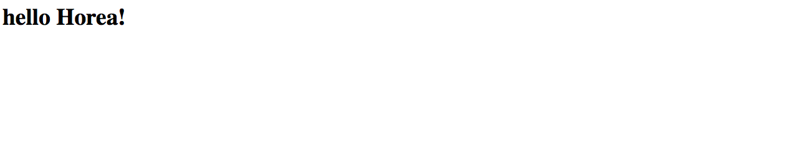
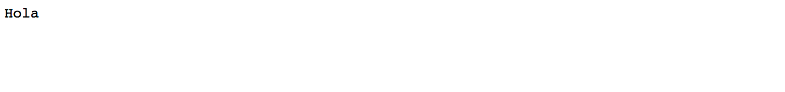
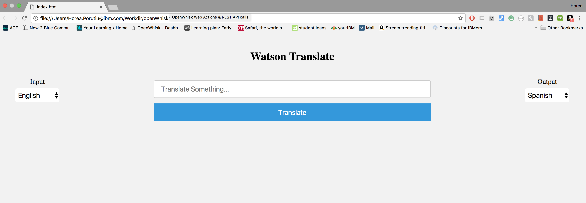

Demo of the finished product:
In this blog post, i’ll go over how to use IBM’s Function-as-a-Service (Faas), OpenWhisk, to build a basic translation app. Our app will get its data by using REST API calls to talk to Watson. Keep in mind that you could use any sort of back end written in any langauge you want, but I chose OpenWhisk since I wanted to get familiar working with a Function-as-a-Service. This exercise is great for developers that are interested in learning REST API and implementing something quickly that they could then put on their resume. The goal of this post is to help you understand REST API calls and Function-as-a-Service back end services. To get started, you must have:
a free IBM Cloud ‘Bluemix’ account from here
the OpenWhisk CLI (also free) downloaded and ready to go, from here
The code explained in this blog is available here on Github. If you are not familiar with OpenWhisk, or Function-as-a-Service, you can read a bit more about it here. Unsurprisingly, it took me some time to wrap my head around, but I do think it is a really powerful tool for developers, and could save you a lot of money down the road if used properly. It’s not ideal for every use case, but for some use cases it works extremely well. Enough about that, let’s get started.
function main({name}) {
var msg = 'you did not tell me who you are.';
if (name) {
msg = `hello ${name}!`
}
return {body: `<html><body><h3>${msg}</h3></body></html>`}
}
Go to the directory where your file is, and run this command to
create a package where your web action can live.
wsk package create demo1
Note: If this command failed,
go back up to the first step where you downloaded the OpenWhisk CLI and test it again
to make sure it works.
Now, in the same directory run this command to enable your action to be a web action.
wsk action create demo1/hello hello.js --web true
If everything worked, you should see something like this:

Note: I had already created a package called “demo1”, so I had to create a package called “demo14”. It’s the same thing, and for the purpose of this demo, stick to calling your package “demo1”.
By running this command, you will be able to access your action through a unique URL without authentication. Be careful!
https://{APIHOST}/api/v1/web/{QUALIFIED ACTION NAME}.{EXT}
If you are using Bluemix, the APIHOST is:
openwhisk.ng.bluemix.net
To see your Qualified Action Name, simply type this in:
wsk action list
You should see something like this…yes, I scratched out part of mine :)

This part is really really important, so pay attention. Check to see what your namespace is. Mine is “_dev”. Now, using my example, and taking the first action, the web URL is:
https://openwhisk.ng.bluemix.net/api/v1/web/_dev/demo1/hello
P.S. don’t try to go to the above URL,
it won’t do anything. Next, let’s pass in a query parameter. Your URL should look similar
to mine above, except for your own particular namespace.
https://openwhisk.ng.bluemix.net/api/v1/web/{yournamespace}/demo1/hello?name=Horea
Open the URL above (adjusted for your particular namespace) and
you should see something like this on your screen. If you don’t see this, you
most likely messed up on the URL. If you want to read more about web actions,
check out the documentation.

Cool! Now that you have a basic understanding of how web actions work with OpenWhisk, let’s start a more interesting example.
var request = require('request');
function main(params) {
//Language Translation Service Credentials
var username = "username";
var password = "password";
var postURL = "https://" + username + ":" + password +
"@gateway.watsonplatform.net/language-translator/api/v2/translate";
var promise = new Promise(function(resolve, reject) {
request.post({
url: postURL,
//the inputs to make the call to Language Translation
json: {
'source' : params.source,
'target' : params.target,
'text' : params.text
}
},
function(error, response, body){
resolve ({
//need to return this so that HTTP Response body is parsed correctly
headers: {
'content-type': 'application/json'
},
body: new Buffer (body.translations[0].translation).toString('base64')
});
});
});
return promise;
}
After copy and pasting,
change the username and password variables with your Watson Translation Service Credentials. To find your Credentials, go to your Bluemix Dashboard, click on
“Create Service”, -> Language Translator -> Create. Then back on your dashboard,
go to your service, click on “Language Translator-4d” -> Service Credentials ->
View Credentials.
What we are doing above is making a HTTP Post request to the Watson Platform to be able to use their Language Translation. We will pass in the source langauge, target language, and the text to translate through our front end (which we will build right after this section!) and Watson will do all the back end work. One tricky part is that we have to return our content-type headers as well as create a buffer so that our app can parse the body of the HTTP Response correctly.
Now let’s make this a web action. Make sure you are in the same directory where test.js is, save the file, and type the following in your command line:
wsk action create demo1/test test.js --web true
Let’s test this out. Open up the following URL in your browser(again fill in
your personal namespace as we learned above):
https://openwhisk.ng.bluemix.net/api/v1/web/{yournamespace}/demo1/test?source=English&target=Spanish&text=hello
If all went well, you should see the following in your browser:

If you do not see this, check your URL and make sure you are putting in your correct namespace. Everything should be very similar to the hello example above. The only difference is that we made a different action based on a different file.
<!--Created by Horea Porutiu-->
<html>
<head>
<link rel="stylesheet" href="style.css">
</head>
<body>
<div id = "background">
<center><h1>Watson Translate</h1></center>
<div id="left">
<center><label id="leftLabel">Input</label></center>
<select onchange="langTest()" id="source" name="inputLang">
<option value="English">English</option>
<option value="Spanish">Spanish</option>
<option value="Arabic">Arabic</option>
<option value="Portuguese">Portuguese</option>
<option value="French">French</option>
</select>
</div>
<div id="right">
<center><label id="rightLabel">Output</label></center>
<select id="target" name="outputLang">
<option value="Spanish">Spanish</option>
<option value="English">English</option>
<option value="Arabic">Arabic</option>
<option value="Portuguese">Portuguese</option>
<option value="French">French</option>
</select>
</div>
<div>
<center>
<label for="text"></label>
<input type = "text" placeholder="Translate Something..." id= "text" name="text" required>
<form name ="login-form" action=javascript:translate()>
<input type="submit" value="Translate">
</form>
</center>
</div>
<center>
<div id ="transText" ></div>
<div id = "myLoader" class="loader"></div>
</center>
</div>
<!-- Start of JavaScript -->
<script>
var data = {};
var loader = document.getElementById("myLoader");
loader.hidden = true;
var targetLang = document.getElementById("target");
//Disable the user from picking English as output at the start of the program,
//since English is by default the input
targetLang.options[1].disabled = true;
//This function modifies Watson language translation options based on what user picks.
//Watson can only do certain domains.
function langTest() {
var sourceLang = document.getElementById("source").value;
for (i = 0; i < targetLang.options.length; ++i) {
targetLang.value = "English";
targetLang.options[i].disabled = false;
}
if (sourceLang != "English") {
for (i = 0; i < targetLang.options.length; ++i) {
targetLang.value = "English";
//diable all options since Watson tranlslates from
//Arabic, Spanish, French and Portueguese to English only.
if (targetLang.options[i].value != "English") {
targetLang.options[i].disabled = true;
}
}
}
//Don't let user try to translate from English to English..doesn't make sense.
else {
targetLang.value = "Spanish";
targetLang.options[1].disabled = true;
}
}
//variable that will hold our final translation
var outputText = document.getElementById("transText");
function translate() {
outputText.hidden = true;
loader.hidden = false;
//load up our data by extracting from text field and drop down menus
data.source = document.getElementById("source").value;
data.target = document.getElementById("target").value;
data.text = document.getElementById("text").value;
//need to convert to string to be able to communicate over HTTP
var json = JSON.stringify(data);
var OpenWhiskUrl = "https://openwhisk.ng.bluemix.net/api/v1/web/{yournamespace}/demo1/test"
//Our HttpRequest that will enable us to talk to Watson
var ourRequest = new XMLHttpRequest();
ourRequest.open("POST", OpenWhiskUrl, true);
ourRequest.setRequestHeader('Content-type','application/json');
ourRequest.onload = function() {
if (ourRequest.status == 400) {
outputText.innerHTML = "Error, check your network connection.";
}
else {
//set the response from Watson to a div
outputText.innerHTML = ourRequest.responseText;
}
outputText.hidden = false;
loader.hidden = true;
}
ourRequest.send(json);
}
</script>
</body>
</html>
After copy and pasting,
change the OpenWhiskUrl to your URL with your specific namespace.
This url is the interface that will let us access our back end.
In the same directory, create a file called style.css with the following code:
body {
background-color: #f2f2f2;
}
.loader {
border: 16px solid white; /* Light grey */
border-top: 16px solid #3498db; /* Blue */
border-radius: 50%;
width: 10px;
height: 10px;
animation: spin .5s linear infinite;
}
@keyframes spin {
100% { transform: rotate(360deg); }
}
input[type=text], select {
height: 50px;
width: 50%;
padding: 12px 20px;
margin: 8px 0;
display: inline-block;
border: 1px solid #ccc;
border-radius: 4px;
box-sizing: border-box;
}
select {
font-size: 20px;
width: 100%;
height: 40px;
padding-left: 20px;
padding-right: 20px;
border: none;
border-radius: 4px;
background-color: white;
}
input[type=submit] {
width: 50%;
background-color: #3498db;
color: white;
padding: 14px 20px;
margin: 8px 0;
border: none;
cursor: pointer;
font-size: 20px;
}
input[type=submit]:hover {
background-color: #0CABE8;
}
div {
border-radius: 5px;
padding: 20px;
}
#right{
float: right;
}
#left{
float: left;
}
#rightLabel, #leftLabel{
text-align: center;
}
#myLoader, #transText {
position: absolute;
margin-left: auto;
margin-right: auto;
left: 0;
right: 0;
}
#transText {
font-size: 30px;
}
label, #text{
font-size: 20px;
}
Nice! Now, if you go to open your index.html file (right click, Open), you
should be able to see a basic web page that looks like this:

If that is not what shows up for you, make sure that your index.html and style.css are in the same directory.
Did you get the correct output? If so congrats! If not, please comment below and I can try to help you debug. Most likely, it’s either the credentials that were not input correctly, or the OpenWhisk URL in your index.html.
Note: Only some languages are available for translation, this is why some are blanked out when you choose certain domains.
Please give me feedback and ideas for next projects that you would like to see. Don’t be afraid to tell me this sucked! I appreciate all comments. Enjoy!